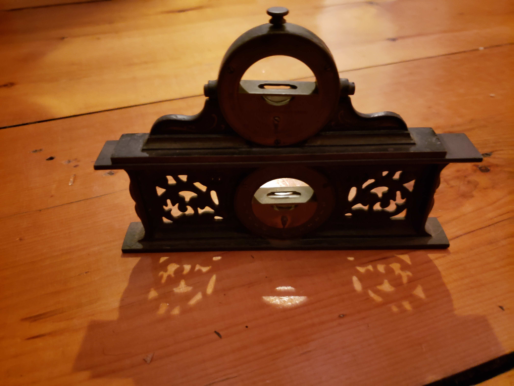

Featured Products

Anvil with Cutting Hardy

Flat Spirit Level
Dual Antique Revolvers
Revolver Colletion

Dual Spirit Level

Curved Spirit Level
About Us
“Antiques Tools a Specialty” was founded by Dana Johnsen in 1960. Specializing in blacksmithing and woodworking, he built an amazing collection of antique tools, as well as a large antique firearm collection to go along with it. The business was run by him until his death in 2021, when his son Carl Johnsen took over. The inventory has continued to grow and is now being brought online and turned into a 3rd generation business by grandson Noah Johnsen.